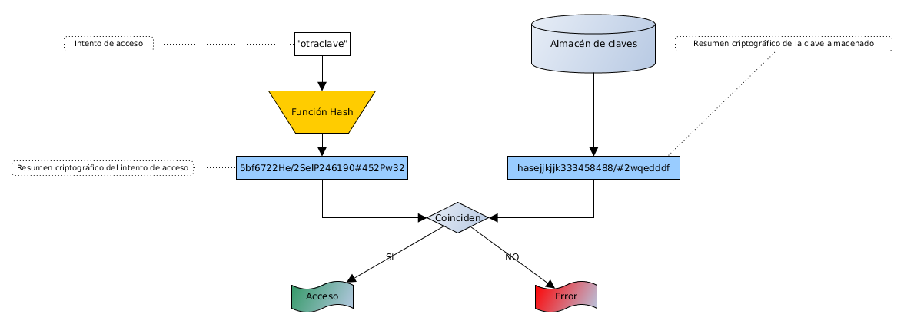
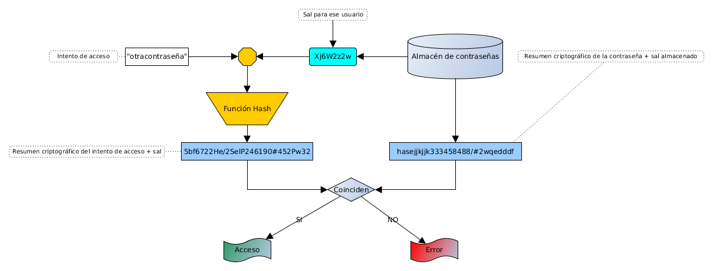

Algoritmos resumen
Mikel Egaña Aranguren
Algoritmos de resumen
Funciones de dispersión (one-way hash)
Generan un criptograma de un determinado tamaño que representa todo el contenido original (Si cambia lo más mínimo, el resumen criptográfico es distinto)
No tienen inversa
No se puede descifrar
pag 37, 39 de grokking bitcoin
Algoritmos de resumen
Utilidad:
Certificar la integridad de la información
Almacenar claves
Implementar la firma digital
Algoritmos de resumen
Certificar la integridad de la información
http://ftp.mozilla.org/pub/mozilla.org/xulrunner/releases/2.0/MD5SUMS
Algoritmos de resumen
Almacenar claves
Algoritmos de resumen
Identificación

Algoritmos de resumen
Problemas
Todo el mundo con la misma clave tiene el mismo hash
Se pueden precalcular los hash de todo el espacio de claves
Algoritmos de resumen
Solución: usar "sal" (Salt), o semilla

Algoritmos de resumen
Identificación con sal
Algoritmos de resumen
Ventajas del uso de sal
La misma clave tiene una codificación distinta cada vez
Dificulta los ataques por fuerza bruta
Si roban la BBDD con las claves y la sal, no aporta
nada
Algoritmos de resumen
Funciones de dispersión más usadas
Algoritmos de resumen
Problemas
Colisiones: dos textos distintos que generen el mismo resumen
Ataques que debilitan el algoritmo
Soluciones
Usar otros algoritmos que generan resúmenes criptográficos más largos
SHA-224, SHA-256, SHA-384, SHA-512, ...
Contraseñas en S.O.
Linux:
Ubicación: /etc/shadow
Obtención: sudo cat /etc/shadow
Formato: user:$Algoritmousado$sal$ResumenCriptográfico:A:B:C:D:E:F:
Contraseñas en S.O.
Formato Linux:
Algoritmousado: 1: MD5; 2: Blowfish; 3: NT; 5: SHA-256; 6: SHA-512
Sal: Cadena aleatoria para derivar las claves
Contraseñas en S.O.
Formato Linux:
A: número de días sin cambiar la clave (desde 01/01/1970)
B: número de días hasta poder cambiar la clave
C: número máximo de días que se puede estar sin cambiar la clave
Contraseñas en S.O.
Formato Linux:
D: número de días de antelación con el que hay que avisar al usuario de que tiene que cambiar la clave
E: número de días desde que caduque la contraseña hasta que se desactive la cuenta
F: número de días hasta que la cuenta se desactive (desde 01/01/1970)
VIDEO